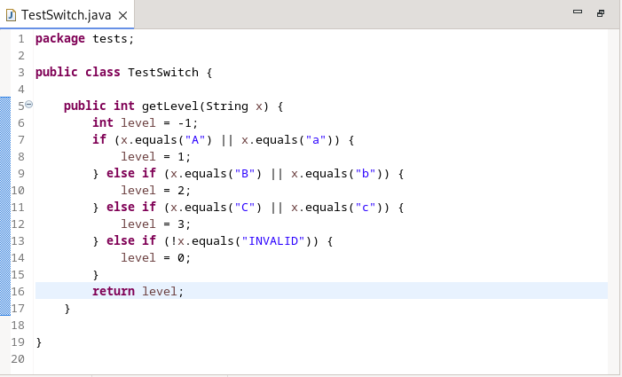
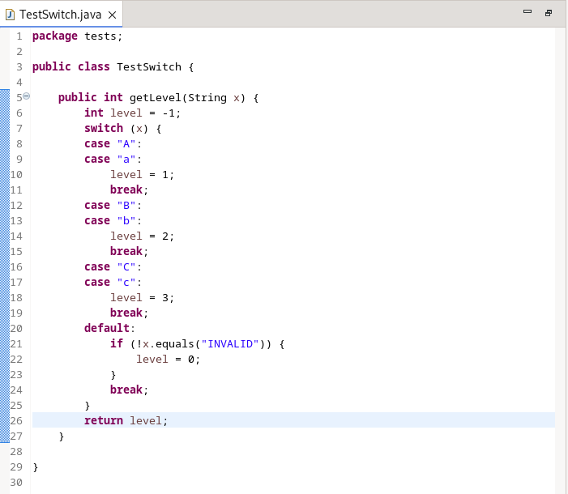

Here are descriptions of some of the more interesting or significant changes made to the Java development tools (JDT) for the 4.33 release of Eclipse. They are grouped into:
See also the Eclipse Platform What's New document for changes in the Platform.
We also recommend to read the Tips and Tricks.
Java Editor |
|
| Enhance if/else to switch CleanUp |
The clean-up to convert an if/else-if/else block into a switch has been enhanced to support String literals and Enum constants. As before, the if/else-if/else block must have at least 3 blocks and must look for constant expressions except for the last block which can be put into the default case.
For a String variable, each if/else expression can check using the String.equals() method. For an Enum the code simply uses the == operator. Use of the || operator is allowed to check multiple values and corresponds to a fall-through in the resultant switch statement. To use the clean-up, go to Source > Clean Up > Code Style page and select: Convert if/else if/else chain with 3 blocks min to switch. For example, performing the clean-up on the following:  will result in:  |